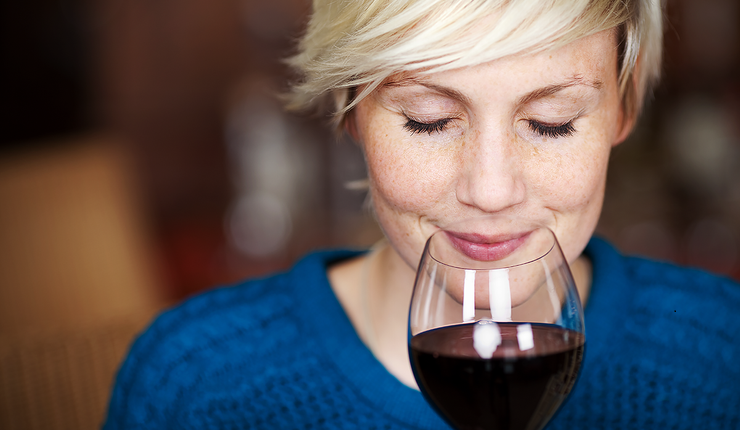
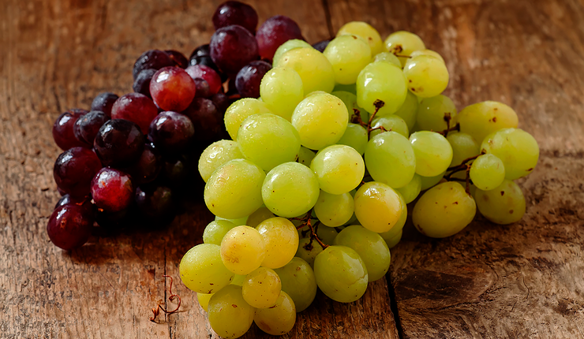

 5 Feb 2022 How Is Wine Rated? Awards are the most important aspect for wines. If experts rate a particular wine highly, then it indicates that the production te...
 1 Feb 2022 Grapes for Wiinemaking The most important thing in wine production is the quality of the grapes. Without this, it is impossible to make good wine. Theref...
26 Jan 2022 Wine Snacks Drinking wine is a whole art. However, to not spoil the taste, you need to select snacks carefully. It should be noted that differ...